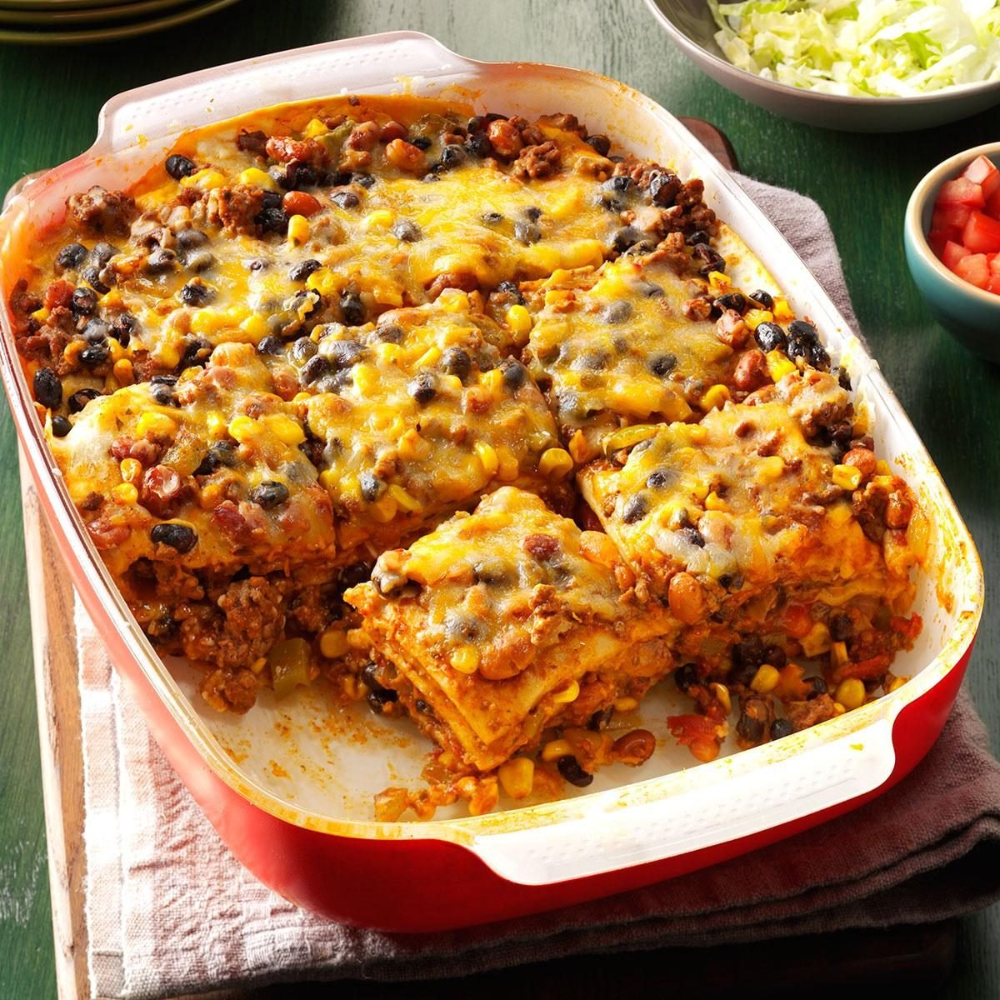

Enchilada Casserole

Description
I love enchiladas, but I'm sometimes too lazy to make them properly. When that happens, I turn to this recipe. It's easy to customize, and it involves less touch time than most enchilada recipes do.
Photo courtesy of Taste of Home.
Ingredients
- about 1 cup enchilada sauce (I admit that I usually eyeball the amount)
- corn or flour tortillas, enough to make three complete layers in your dish
- cheese (who measures cheese?)
- 1 can of black beans, drained and rinsed
- 3/4 cup unprepared TVP and seasoning
- spinach or whatever vegetables you like
Steps
- Preheat the oven to 350°F. Prepare the TVP, rinse and drain the black beans, and sautee or thaw any vegetables that require additional preparation.
- Mix together the beans, TVP, and vegetables. Add a little bit of the enchilada sauce.
- Spray the casserole dish and lay down the first layer of tortillas. (Cutting them in half helps with coverage.) Top with half of the mixture, a layer of cheese, and a layer of tortillas. Thoroughly add enchilada sauce.
- Repeat with the remaining filling and tortillas, topping with the last of the sauce and extra cheese.
- Cover with foil and bake for 30 minutes.
- After 30 minutes, remove the foil and bake for an additional 10 minutes or until the top has begun to brown.